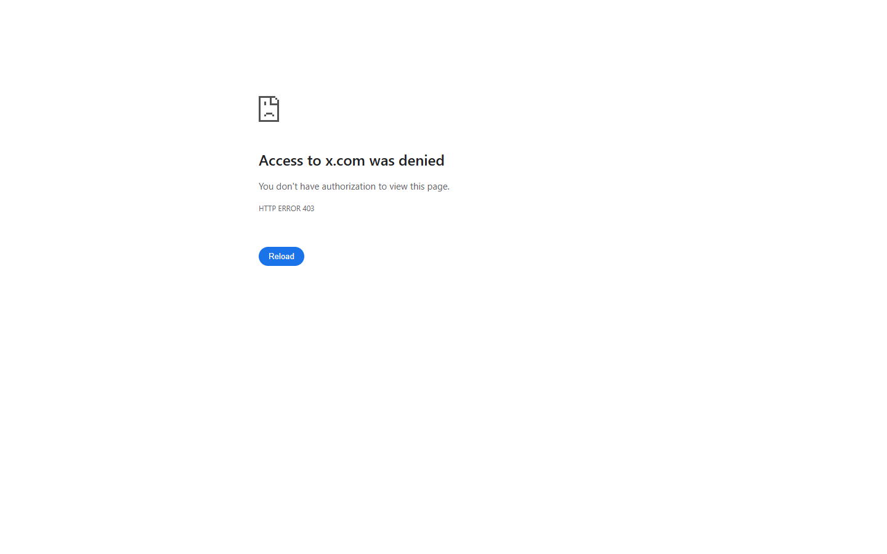

Keeping Up With Kpop
PYTHON · TWITTER API · GPT

NOTES
A bot that scrapes headlines off Soompi, has GPT write the post, and publishes it through the Twitter API. It ran on its own for a good while.
The first time I chained scraping, generation and posting into one unattended pipeline, which turned out to be the shape of a lot of things I built afterwards.